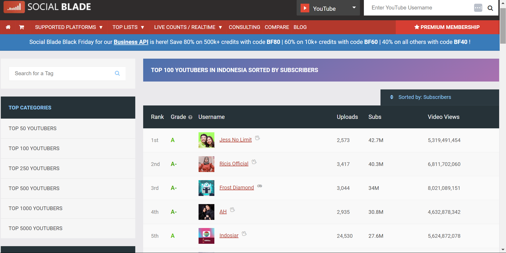
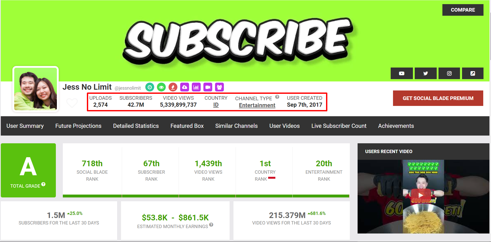
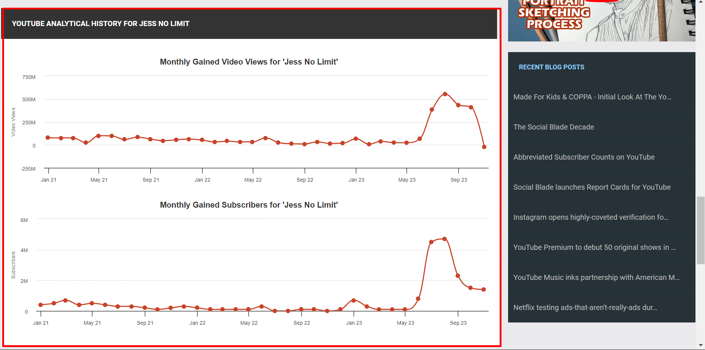
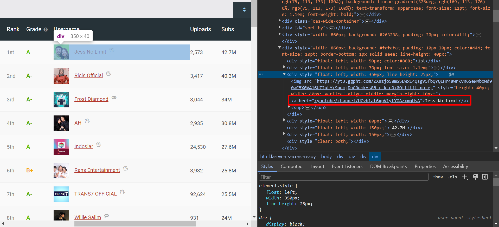
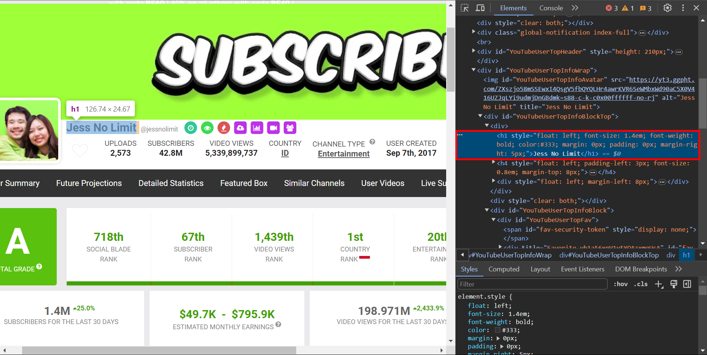
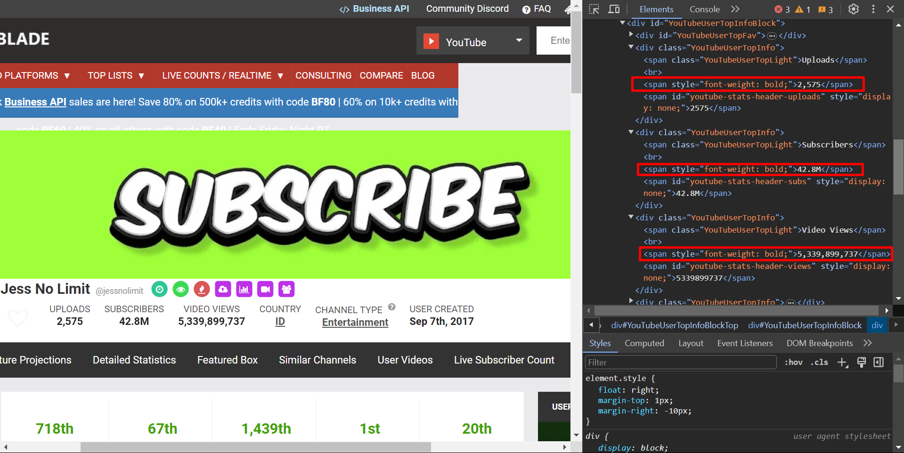
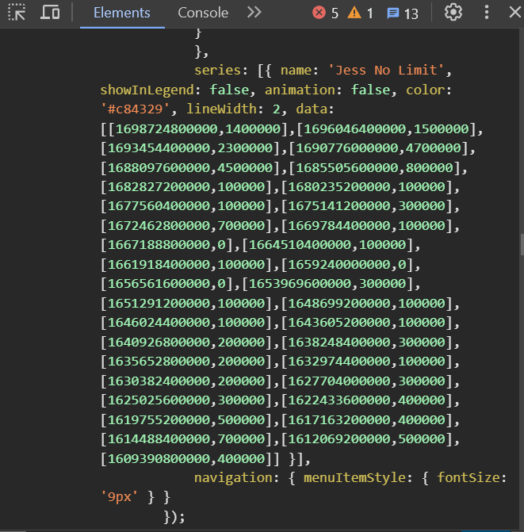

Code
import json
import re
from urllib.request import Request, urlopen
from bs4 import BeautifulSoup as bs
import pandas as pd
import time
from dateutil.parser import parseRafi Naufal Aziz
October 26, 2023
YouTube has become one of the largest platforms in the world. In Indonesia itself, YouTube ranks second on the list of the most visited sites. With such a large audience, YouTube provides a huge opportunity for anyone looking to pursue a career in content creation.
Certainly, there will be many considerations to be faced before creating a content. Understanding trends and audience preferences is crucial, especially on a highly dynamic platform like YouTube.
Therefore, I will attempt to analyze data from the top 100 YouTubers in Indonesia with the most subscribers. With this analysis, I hope we can gain insights into what kind of contents are trending in Indonesia and identify what creators can do to enhance their channel’s potential.
This project is divided into two parts. The first part involves data collection (scraping) and data cleaning, while the second part involves data visualization and analysis. The analysis part can be viewed here.
You might get different result when you run all the code in this article. This happens because the data source will be changed (or rather, updated) frequently.
To obtain the data, I could have used the YouTube API. However, due to resource limitations, I ended up using data scraping technique on SocialBlade website to collect the data.

Although all of these data are available publicly and can be accessed by anyone, I don’t recommend to do the scraping by yourself, as it is against their terms of service.
We can gather many kinds of data from this website. However, we will only focus on a few primary pieces of information:
These information are present in each of the channel’s page from the earlier top 100 list. For example, this one below is from Jess No Limit’s page.


Before we start, let’s import some packages
Now let’s begin!
First, we will navigate to the main page containing the top 100 most subscribed Indonesian channels. In Python, we can do this by sending a request to the URL using urllib.request package.
url = 'https://socialblade.com/youtube/top/country/id/mostsubscribed'
# optional, might be needed in some cases
headers = {
'User-Agent': 'Mozilla/5.0 (Windows NT 10.0; Win64; x64) AppleWebKit/537.36 (KHTML, like Gecko) Chrome/119.0.0.0 Safari/537.36'}
req = Request(url, headers=headers)
response = urlopen(req)Let’s see if our request was successful (status code 200). If it succeed, we will create a soup variable, which contains the entire HTML for the URL.
Request success!Great, we are in! Now, let’s navigate the information page of each channel on this list. To do that, we need to get the url of each channel’s page.
To get the URL of each channel’s page, we need to know where is it located in the HTML. Apparently, the URL is located in as a href attribute of an <a> element inside <div> container with attributes style="float: left; width: 350px; line-height: 25px;". For example, see the image below. It shows the URL for Jess No Limit’s channel.

We can retrieve that information easily using BeautifulSoup.
# get every div containers that have a specific style attribute
divs_with_style = soup.find_all(
'div', style="float: left; width: 350px; line-height: 25px;")
# to get each channel's url ID,
# extract value of 'href' attribute in every <a> element inside each div
channel_urls = [div.find('a')['href'] for div in divs_with_style]
# print some example
print('examples:', channel_urls[:3])examples: ['/youtube/channel/UCvh1at6xpV1ytYOAzxmqUsA', '/youtube/channel/UC4tS4Q_Cno5JVcIUXxQOOpA', '/youtube/channel/UC4hGmH5sABOA70D4fGb8qNQ']Having acquired the URL for each channel’s information page, we can access it using a similar procedure to the previous one. For example, here is how you would access the information page for Jess No Limit’s channel.
channel_url = 'https://socialblade.com' + '/youtube/channel/UCvh1at6xpV1ytYOAzxmqUsA'
# optional, might be needed in some cases
headers = {
'User-Agent': 'Mozilla/5.0 (Windows NT 10.0; Win64; x64) AppleWebKit/537.36 (KHTML, like Gecko) Chrome/119.0.0.0 Safari/537.36'}
req = Request(channel_url, headers=headers)
response = urlopen(req)
#| echo: true
if response.getcode() == 200:
# parse the HTML content of the page
soup = bs(response.read(), 'html.parser')
print('Request success!')
else:
print(f"Failed to retrieve the page. Status code: {response.getcode()}")Request success!I will divide this section into two parts, basic data and time series data. The reason is that their structure is different:
For name information, it is located in a <h1> element with style float: left; font-size: 1.4em; font-weight: bold; color:#333; margin: 0px; padding: 0px; margin-right: 5px;. For example, see the image below. It shows the name of Jess No Limit’s channel.

We can retrieve that information like we did before using BeautifulSoup.
# get first <h1> element that have a specific style attribute
name = soup.find(
'h1', style="float: left; font-size: 1.4em; font-weight: bold; color:#333; margin: 0px; padding: 0px; margin-right: 5px;")
# strip to remove additional spaces
name = name.text.strip()
# print name result
print(f'the name of the channel is {name}.')the name of the channel is Jess No Limit.For other basic information, it is located in a <span> element with style font-weight: bold;. In addition to that, we have to make sure that we don’t collect country information, because we already know all channels that we are going to visit are from Indonesia. Again, as an example, see the image below.

Using similar procedure like before, it yields all the basic data that we need.
# get first <h1> element that have a specific style attribute
name = soup.find(
'h1', style="float: left; font-size: 1.4em; font-weight: bold; color:#333; margin: 0px; padding: 0px; margin-right: 5px;")
# strip to remove additional spaces
name = name.text.strip()
# get all <span> elements that have a specific style attribute
spans_with_style = soup.find_all('span', style="font-weight: bold;")
result_basic = [name] + [span.text for span in spans_with_style if span.text != 'ID']
# print name result
print(f'Basic data about this channel: {result_basic}.')Basic data about this channel: ['Jess No Limit', '2,575', '42.8M', '5,347,533,136', 'Entertainment', 'Sep 7th, 2017'].Now for time series data, it’s a bit trickier. Since the monthly chart is interactive, we need to hover to a point to see the number of subs (or views) gained at that point. This means that the moment we enter this page, the number isn’t shown up anywhere. Therefore, we should be looking for the time series data somewhere in the script that’s linked to that chart.
For example, here’s what the time series data looks like Jess No Limit’s page.

As we can see, it contains a list of list, which each inner list consists of two elements: first one for ID and second one for the actual data (in above example, subscribers gained). So how do we find that data using our program?
First we will find all of the <script> element. Let’s see what it looks like.
'script elements (first 200 characters): <script type="text/javascript">var _sf_startpt=(new Date()).getTime()</script><script type="text/javascript">var beforeload = (new Date()).getTime()</script><script src="//use.fontawesome.com/64cd5ce7'Now, in that text, we want to retrieve all part of the text that is in the form of a 2D list (starts with ‘[[’ and ends with ’]]’). Remember that there will be two chunk of text that matches this criteria: one for monthly gained subs and one for monthly gained views.
subs data: [[1698724800000,1400000],[1696046400000,1500000],[1693454400000,2300000],[1690776000000,4700000],[1688097600000,4500000],[1685505600000,800000],[1682827200000,100000],[1680235200000,100000],[1677560400000,100000],[1675141200000,300000],[1672462800000,700000],[1669784400000,100000],[1667188800000,0],[1664510400000,100000],[1661918400000,100000],[1659240000000,0],[1656561600000,0],[1653969600000,300000],[1651291200000,100000],[1648699200000,100000],[1646024400000,100000],[1643605200000,100000],[1640926800000,200000],[1638248400000,300000],[1635652800000,200000],[1632974400000,100000],[1630382400000,200000],[1627704000000,300000],[1625025600000,300000],[1622433600000,400000],[1619755200000,500000],[1617163200000,400000],[1614488400000,700000],[1612069200000,500000],[1609390800000,400000]]
views data: [[1698724800000,-19801666],[1696046400000,411397220],[1693454400000,435506366],[1690776000000,551439344],[1688097600000,386627362],[1685505600000,65763364],[1682827200000,23496055],[1680235200000,24277175],[1677560400000,38229401],[1675141200000,8254410],[1672462800000,66544745],[1669784400000,18234562],[1667188800000,15043919],[1664510400000,32917405],[1661918400000,10335789],[1659240000000,12288453],[1656561600000,25526169],[1653969600000,76262949],[1651291200000,32441094],[1648699200000,32631614],[1646024400000,40522486],[1643605200000,31444275],[1640926800000,52438812],[1638248400000,63853960],[1635652800000,55090234],[1632974400000,44384186],[1630382400000,62924763],[1627704000000,83710454],[1625025600000,59117171],[1622433600000,97490812],[1619755200000,99810016],[1617163200000,23185815],[1614488400000,75239628],[1612069200000,76170914],[1609390800000,76419152]]Next, we will filter the relevant numbers and put them together into a pair of [subs, views] for each months.
# find all part of text that matches this pattern
data = re.findall(r'data:\s*(\[\[.*?\]\])', script)
# we use json.loads here to convert the text into a list
subs_data = json.loads(data[0])
views_data = json.loads(data[1])
result_time_series = []
# filter it by grabbing the second value,
# and put them together in `result` variable
for subs, views in zip(subs_data, views_data):
result_time_series.append([subs[1], views[1]])
print(f'result: {result_time_series}')result: [[1400000, -19801666], [1500000, 411397220], [2300000, 435506366], [4700000, 551439344], [4500000, 386627362], [800000, 65763364], [100000, 23496055], [100000, 24277175], [100000, 38229401], [300000, 8254410], [700000, 66544745], [100000, 18234562], [0, 15043919], [100000, 32917405], [100000, 10335789], [0, 12288453], [0, 25526169], [300000, 76262949], [100000, 32441094], [100000, 32631614], [100000, 40522486], [100000, 31444275], [200000, 52438812], [300000, 63853960], [200000, 55090234], [100000, 44384186], [200000, 62924763], [300000, 83710454], [300000, 59117171], [400000, 97490812], [500000, 99810016], [400000, 23185815], [700000, 75239628], [500000, 76170914], [400000, 76419152]]So, Jess No Limit gained 1400000 subs and lost 19801666 views in last month (October 2023).
A channel can lose views count due to some of their videos were deleted by youtube or by themself.
Let’s put it all together and make some functions!
get_channel_data returns informations from each channelsget_all_databasically calls get_channel_data on every channels and return all of the informations collected from each of them.def get_channel_data(channel_url, headers=None):
channel_url = 'https://socialblade.com' + channel_url
# send a request to the channel URL
req = Request(channel_url, headers=headers)
response = urlopen(req)
# check if the request was successful (status code 200)
if response.getcode() == 200:
soup = bs(response.read(), 'html.parser')
# basic
name = soup.find(
'h1', style="float: left; font-size: 1.4em; font-weight: bold; color:#333; margin: 0px; padding: 0px; margin-right: 5px;")
name = name.text.strip()
spans_with_style = soup.find_all('span', style="font-weight: bold;")
result_basic = [name] + \
[span.text for span in spans_with_style if span.text != 'ID']
# time series
script = soup.find_all('script')
script = ''.join(str(item) for item in script)
data = re.findall(r'data:\s*(\[\[.*?\]\])', script)
subs_data = json.loads(data[0])
views_data = json.loads(data[1])
result_time_series = []
for subs, views in zip(subs_data, views_data):
result_time_series.append([subs[1], views[1]])
return result_basic, result_time_series
else:
return(f"Failed to retrieve the page. Status code: {response.getcode()}")
def get_all_data(url, headers=None):
req = Request(url, headers=headers)
response = urlopen(req)
if response.getcode() == 200:
soup = bs(response.read(), 'html.parser')
divs_with_style = soup.find_all(
'div', style="float: left; width: 350px; line-height: 25px;")
channel_urls = [div.find('a')['href'] for div in divs_with_style]
# results
result_basic = []
result_time_series = []
for channel_url in channel_urls:
# get result of each channels and append it to the results
channel_result_basic, channel_result_time_series = get_channel_data(
channel_url, headers=headers)
result_basic.append(channel_result_basic)
result_time_series.append(channel_result_time_series)
# (optional) add a sleep to prevent requests sent too fast
time.sleep(0.1)
return result_basic, result_time_series
else:
return(f"Failed to retrieve the page. Status code: {response.getcode()}")You can execute the code below to call the function and store the data in data_basic and data_time_series.
It will be convenient to clean the data before we proceed to analyze it. Let’s examine what can we do to make our data cleaner. First, let’s create a dataframe and ask: What does the data looks like? Do each column have a proper data type?
| name | upload_count | subscribers (million) | views | tag | date_created | |
|---|---|---|---|---|---|---|
| 0 | Jess No Limit | 2,575 | 42.8M | 5,347,533,136 | Entertainment | Sep 7th, 2017 |
| 1 | Ricis Official | 3,426 | 40.4M | 6,811,702,060 | Entertainment | Jan 15th, 2016 |
| 2 | Frost Diamond | 3,048 | 34M | 8,038,993,217 | Games | Jan 22nd, 2014 |
| 3 | AH | 2,940 | 30.8M | 4,638,933,282 | Entertainment | Jan 26th, 2014 |
| 4 | Indosiar | 24,583 | 27.6M | 5,645,575,794 | Entertainment | Sep 23rd, 2013 |
| ... | ... | ... | ... | ... | ... | ... |
| 95 | TRI SUAKA CHANNEL | 1,486 | 8.13M | 1,005,418,863 | Entertainment | Oct 21st, 2015 |
| 96 | Oura Gaming | 3,721 | 8.12M | 2,460,732,171 | Games | Aug 28th, 2017 |
| 97 | Erpan1140 | 1,597 | 8.11M | 1,652,168,434 | Games | Jan 13th, 2014 |
| 98 | Kananda Widyantara | 851 | 8.06M | 637,071,659 | Games | Mar 5th, 2018 |
| 99 | Zhi En | 1,883 | 8.06M | 4,795,018,196 | Entertainment | May 31st, 2021 |
100 rows × 6 columns
<class 'pandas.core.frame.DataFrame'>
RangeIndex: 100 entries, 0 to 99
Data columns (total 6 columns):
# Column Non-Null Count Dtype
--- ------ -------------- -----
0 name 100 non-null object
1 upload_count 100 non-null object
2 subscribers (million) 100 non-null object
3 views 100 non-null object
4 tag 100 non-null object
5 date_created 100 non-null object
dtypes: object(6)
memory usage: 4.8+ KBThere are several problems that we can fix here:
upload_count, subscribers (million), and views should be integer, not objectdate_created should be datetime, not objectBefore converting upload_count and views column into an integer column, we should remove the comma separator in each of the entry. We can do that by replacing (instead of removing) these commas with an empty string using str.replace().
For subscribers (million), we replace the ‘M’ letter with an empty string.
Then, we can convert them easily using astype()
For the date_created column, we will also use astype to convert it into a datetime object. However, pandas won’t immediately recognize the format (like “Sep 7th, 2017”) as a date.
This is where parse, one of the functions that we imported at the beginning, comes in handy. That function will reformat our date value into a format that astype would recognize. For example, it would transform “Sep 7th, 2017” into “2017-09-07”.
We can utilize the method apply() To implement parse for each value in a dataframe column.
Let’s check how our dtypes looks like now.
<class 'pandas.core.frame.DataFrame'>
RangeIndex: 100 entries, 0 to 99
Data columns (total 6 columns):
# Column Non-Null Count Dtype
--- ------ -------------- -----
0 name 100 non-null object
1 upload_count 100 non-null int32
2 subscribers (million) 100 non-null float64
3 views 100 non-null int64
4 tag 100 non-null object
5 date_created 100 non-null datetime64[ns]
dtypes: datetime64[ns](1), float64(1), int32(1), int64(1), object(2)
memory usage: 4.4+ KBAlthough we have enough features to begin with, it still can be improved. I can think of two new features to be added.
views/upload_count: with this new feature, it can tells us the efficiency of a channel in terms of viewers per video. It makes comparing the performance of two channels easier.age: to intuitively quantify date_created column into an integer value.| name | upload_count | subscribers (million) | views | tag | date_created | views/video | age | |
|---|---|---|---|---|---|---|---|---|
| 0 | Jess No Limit | 2575 | 42.80 | 5347533136 | Entertainment | 2017-09-07 | 2.076712e+06 | 6.2 |
| 1 | Ricis Official | 3426 | 40.40 | 6811702060 | Entertainment | 2016-01-15 | 1.988238e+06 | 7.9 |
| 2 | Frost Diamond | 3048 | 34.00 | 8038993217 | Games | 2014-01-22 | 2.637465e+06 | 9.9 |
| 3 | AH | 2940 | 30.80 | 4638933282 | Entertainment | 2014-01-26 | 1.577868e+06 | 9.8 |
| 4 | Indosiar | 24583 | 27.60 | 5645575794 | Entertainment | 2013-09-23 | 2.296537e+05 | 10.2 |
| ... | ... | ... | ... | ... | ... | ... | ... | ... |
| 95 | TRI SUAKA CHANNEL | 1486 | 8.13 | 1005418863 | Entertainment | 2015-10-21 | 6.765941e+05 | 8.1 |
| 96 | Oura Gaming | 3721 | 8.12 | 2460732171 | Games | 2017-08-28 | 6.613094e+05 | 6.3 |
| 97 | Erpan1140 | 1597 | 8.11 | 1652168434 | Games | 2014-01-13 | 1.034545e+06 | 9.9 |
| 98 | Kananda Widyantara | 851 | 8.06 | 637071659 | Games | 2018-03-05 | 7.486153e+05 | 5.7 |
| 99 | Zhi En | 1883 | 8.06 | 4795018196 | Entertainment | 2021-05-31 | 2.546478e+06 | 2.5 |
100 rows × 8 columns
For time series data, each channel must have exacly 35 months (3 years) of record, meaning that there will be 100 x 35 rows in the dataframe.
However, some channels might be created within the last three years and having less than 35 months of record. In this case, we will append zero values to the record for each months where the channels haven’t been created.
Some channels might also have more than 35 months for some reason (maybe it already contains the record for this month), so we will delete the last record in this case.
# make 35 rows of each names
names = df_1['name']
new_names = []
for name in names:
new_names.extend([name]*35)
subs_gained = []
views_gained = []
for element in data_time_series:
n = len(element)
# if it is less than 35 records, append a [0, 0] values to the record
if n < 35:
extender = [[0, 0] for i in range(35-n)]
element.extend(extender)
# if it is more than 35 records, remove the last record
elif n > 35:
element.pop()
# separate subs and views information from the record
for subs, views in element:
subs_gained.append(subs)
views_gained.append(views)Let’s see how the dataframe looks like
| name | views_gained | subs_gained | |
|---|---|---|---|
| 0 | Jess No Limit | -19801666 | 1400000 |
| 1 | Jess No Limit | 411397220 | 1500000 |
| 2 | Jess No Limit | 435506366 | 2300000 |
| 3 | Jess No Limit | 551439344 | 4700000 |
| 4 | Jess No Limit | 386627362 | 4500000 |
| ... | ... | ... | ... |
| 3495 | Zhi En | 99810016 | 500000 |
| 3496 | Zhi En | 23185815 | 400000 |
| 3497 | Zhi En | 75239628 | 700000 |
| 3498 | Zhi En | 76170914 | 500000 |
| 3499 | Zhi En | 76419152 | 400000 |
3500 rows × 3 columns
I think we forgot something: the date! There should be a date column that indicates when the views and subs were gained. Because I do this analysis in November, we will create a 35 months range from December 2020 to October 2023 for each channel.
| name | views_gained | subs_gained | date | |
|---|---|---|---|---|
| 0 | Jess No Limit | -19801666 | 1400000 | 2023-10-01 |
| 1 | Jess No Limit | 411397220 | 1500000 | 2023-09-01 |
| 2 | Jess No Limit | 435506366 | 2300000 | 2023-08-01 |
| 3 | Jess No Limit | 551439344 | 4700000 | 2023-07-01 |
| 4 | Jess No Limit | 386627362 | 4500000 | 2023-06-01 |
| ... | ... | ... | ... | ... |
| 3495 | Zhi En | 99810016 | 500000 | 2021-04-01 |
| 3496 | Zhi En | 23185815 | 400000 | 2021-03-01 |
| 3497 | Zhi En | 75239628 | 700000 | 2021-02-01 |
| 3498 | Zhi En | 76170914 | 500000 | 2021-01-01 |
| 3499 | Zhi En | 76419152 | 400000 | 2020-12-01 |
3500 rows × 4 columns
Last but not least, merge the two dataframes together to get our final, clean dataframe. This dataframe will be used for visualization and analysis in the next part.
| name | upload_count | subscribers (million) | views | tag | date_created | views/video | age | views_gained | subs_gained | date | |
|---|---|---|---|---|---|---|---|---|---|---|---|
| 0 | Jess No Limit | 2575 | 42.80 | 5347533136 | Entertainment | 2017-09-07 | 2.076712e+06 | 6.2 | -19801666 | 1400000 | 2023-10-01 |
| 1 | Jess No Limit | 2575 | 42.80 | 5347533136 | Entertainment | 2017-09-07 | 2.076712e+06 | 6.2 | 411397220 | 1500000 | 2023-09-01 |
| 2 | Jess No Limit | 2575 | 42.80 | 5347533136 | Entertainment | 2017-09-07 | 2.076712e+06 | 6.2 | 435506366 | 2300000 | 2023-08-01 |
| 3 | Jess No Limit | 2575 | 42.80 | 5347533136 | Entertainment | 2017-09-07 | 2.076712e+06 | 6.2 | 551439344 | 4700000 | 2023-07-01 |
| 4 | Jess No Limit | 2575 | 42.80 | 5347533136 | Entertainment | 2017-09-07 | 2.076712e+06 | 6.2 | 386627362 | 4500000 | 2023-06-01 |
| ... | ... | ... | ... | ... | ... | ... | ... | ... | ... | ... | ... |
| 3495 | Zhi En | 1883 | 8.06 | 4795018196 | Entertainment | 2021-05-31 | 2.546478e+06 | 2.5 | 99810016 | 500000 | 2021-04-01 |
| 3496 | Zhi En | 1883 | 8.06 | 4795018196 | Entertainment | 2021-05-31 | 2.546478e+06 | 2.5 | 23185815 | 400000 | 2021-03-01 |
| 3497 | Zhi En | 1883 | 8.06 | 4795018196 | Entertainment | 2021-05-31 | 2.546478e+06 | 2.5 | 75239628 | 700000 | 2021-02-01 |
| 3498 | Zhi En | 1883 | 8.06 | 4795018196 | Entertainment | 2021-05-31 | 2.546478e+06 | 2.5 | 76170914 | 500000 | 2021-01-01 |
| 3499 | Zhi En | 1883 | 8.06 | 4795018196 | Entertainment | 2021-05-31 | 2.546478e+06 | 2.5 | 76419152 | 400000 | 2020-12-01 |
3500 rows × 11 columns